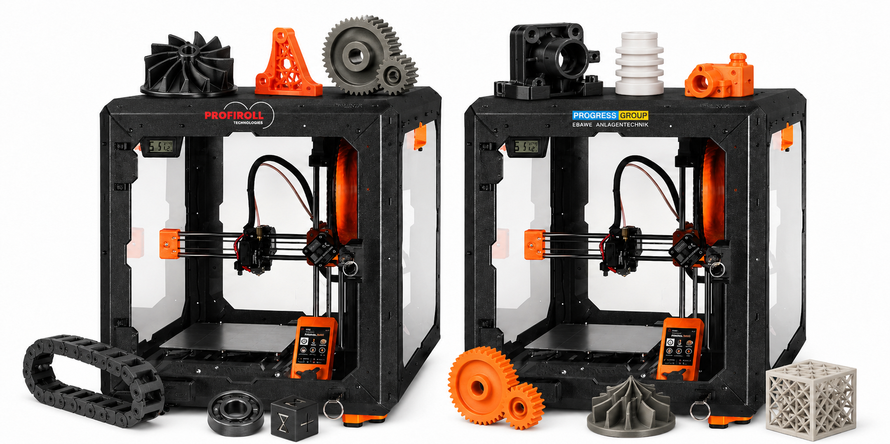
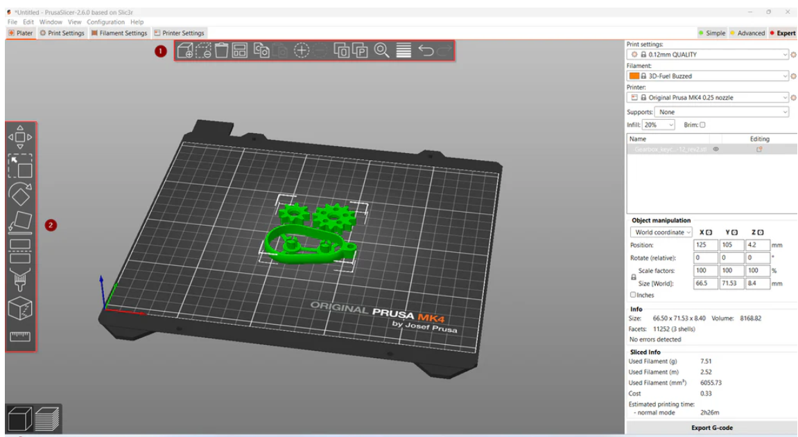

3D-Druck mit dem Prusa MK4

Der Prusa MK4 ist ein präziser FDM-3D-Drucker mit automatischer Kalibrierung und zuverlässiger erster Schicht. Er eignet sich gut für Unterrichtsprojekte, Prototypen und den regelmäßigen Einsatz in der AG, weil Bedienung und Druckqualität auch bei längeren Druckaufträgen stabil bleiben.
Ein Original Prusa MK4/S Enclosure ist ein Gehäuse für den 3D-Drucker.
Es hält die Luft im Druckraum wärmer und gleichmäßiger. Dadurch lassen sich schwierige Materialien wie ASA, PC-CF oder PP besser drucken, weil sich die Teile weniger verziehen.
Die Geräusch- und Geruchsbelastung sinkt merklich.
Druckvorbereitung mit dem Prusa Slicer

Der PrusaSlicer ist die Software für den 3D-Drucker.
Sie ermöglicht die Positionierung verschiedener 3D-Modelle auf der Druckplatte und die Vorschau des Druckvorgangs.
Sie wandelt 3D-Modelle in G-Code um und bietet viele Einstellungen für Material, Temperatur, Geschwindigkeit und Stützstrukturen.
Außerdem unterstützt sie definierte Druckpausen und Filamentwechsel.“